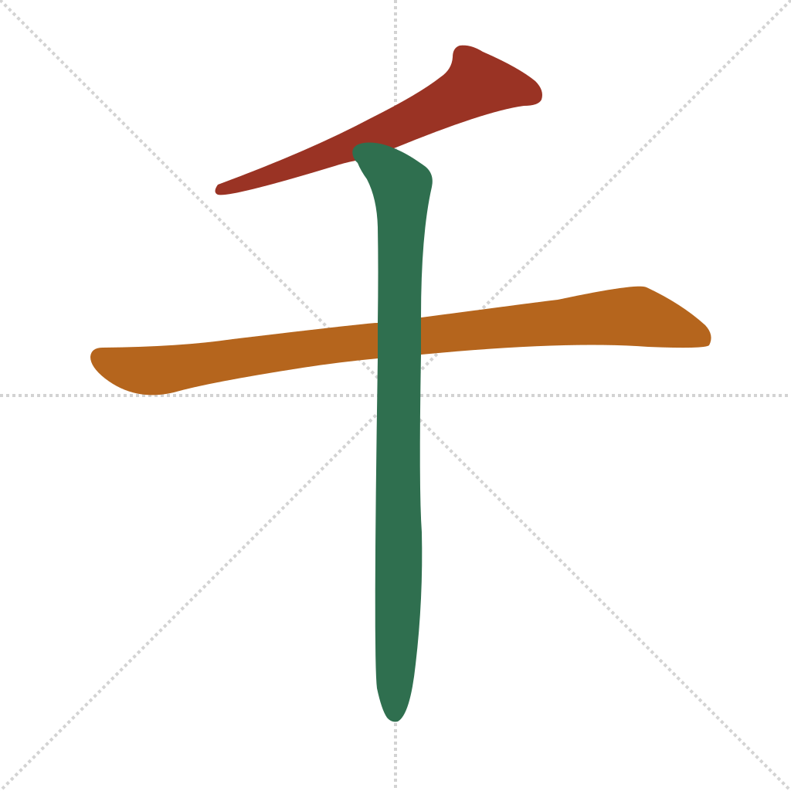
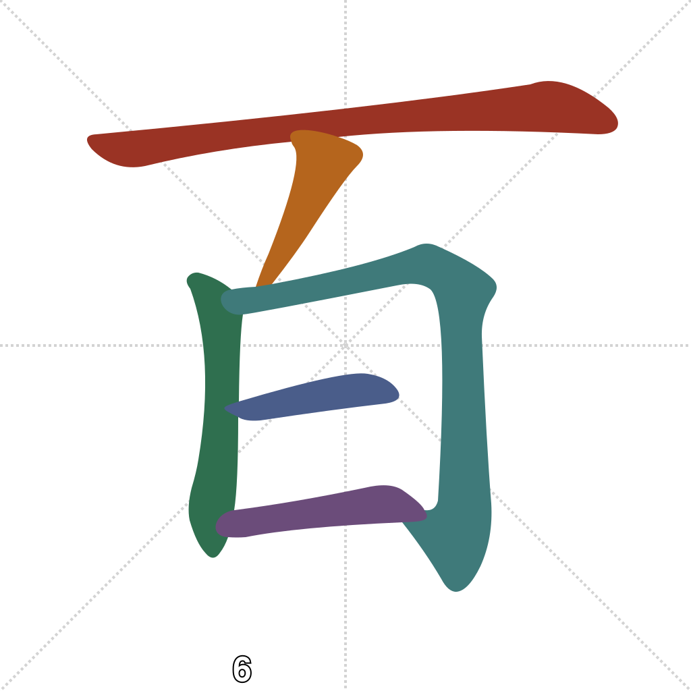

Lesson 9 · Foundational Components
Lesson 5/6 got you to 99 using only digits and 十. Two more characters take you into useful territory for travel — hotel prices, train tickets, addresses, budgets — almost none of which stay under 100.
Quick recall — click each card to flip it:
千 closes a loop from Lesson 8, where 年's etymology mentioned in passing that a stroke was once added to 人 ("person") to create a phonetic stand-in — that stand-in is 千 itself:
qiān — thousand. 一 (literally "one") is the semantic element; 人 (rén, Lesson 1) contributes sound, not meaning. The phonetic link between rén and qiān isn't audible in modern Mandarin — this is an Old Chinese sound correspondence, the kind that erodes over three thousand years of pronunciation shift. You don't need to hear it; knowing the structure is enough. (Wiktionary: 千)

Top horizontal first, then the inner box:

The same multiply-before/add-after logic from Lesson 5 extends straight through:
一 + 百 → 一百 yī bǎi — 100
三 + 百 + 六十 → 三百六十 sān bǎi liù shí — 360
一 + 千 → 一千 yī qiān — 1,000
三百六十 breaks down exactly like 二十三 did in Lesson 5, just one tier up: (3×100) + (6×10) + 0. Anything you can price, count, or number up to 9,999 is now readable with characters you already know.
Which character means "thousand"?
千 (一+人) uses 人 for what purpose?
To say "100" on its own, you need:
三百六十 (三+百+六+十) represents the number:
Etymology sources for both characters are linked inline. For the rigorous version, see the Outlier Dictionary of Chinese Characters.
Out in the world: try reading any price, room number, or ticket cost written in characters rather than Arabic numerals — hotel receipts and some traditional menus are the most likely place you'll meet one.